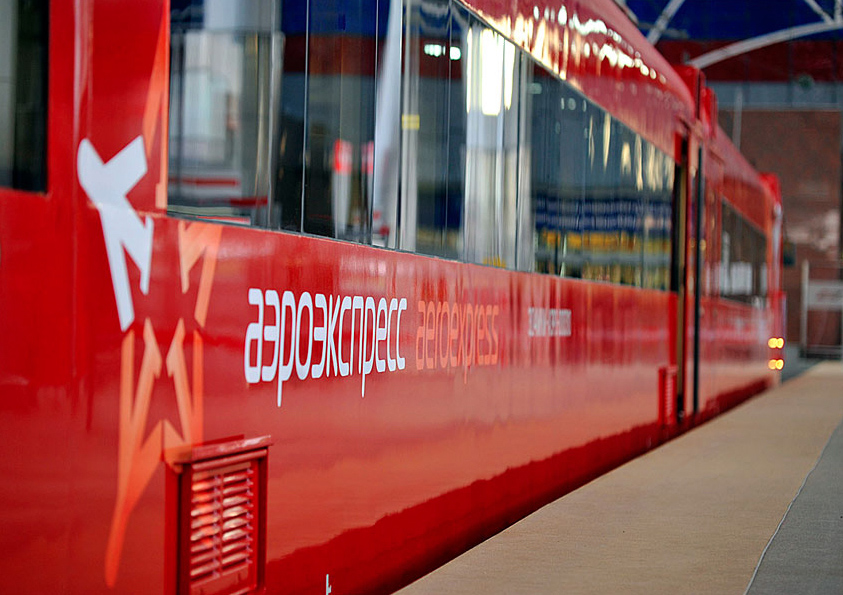

Home
HomeHotel and Restaurant Activity Other
Traveling around Russia Intercity travel is possible by coach, train, boat and plane. Russia is a vast country with enormous distances, but even if it is your first visit to Russia, it is not difficult to get to a destination on your own. The main thing is to plan your route, like during a journey to any unfamiliar places.
The advantages of buses and fixed-route taxis are that they are inexpensive and frequent (every 10-15 min). They can be found at bus stops at the airport. Buy tickets in special kiosks or on the bus
You can get from Moscow airports to the city for 55-150 roubles (1-2$) and by fixed-route taxi for 75-150 roubles (1-2$). Prices are even lower in other Russian cities. For example, the Plus Metro rate (1 journey by train + 1 journey by metro), Airport-to-Airport (2 journeys by aeroexpress + 1 journey by public road transport) and other Aeroexpress tariffs are available from Moscow airports. High-speed trains take passengers to the city centre. They are fast, comfortable, frequent (every 30 min.), they have more luggage space, and different tariffs are available online.
A journey from the airport to the city by standard train will take longer and be less comfortable than by high-speed transport but it will be several times cheaper. Tickets are sold at ticket offices.
The most expensive option is to get a taxi from the airport to the city: in Moscow and St. Petersburg the journey will cost from 1,000 to 1,500 roubles (15-21$), but in Yekaterinburg, only 650 roubles (9$). At railway stations and airports it is better to order a taxi at the information desk or online in advance. To avoid trouble, avoid using unlicensed taxis.